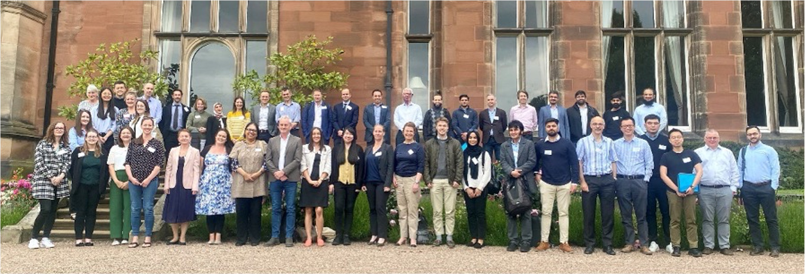
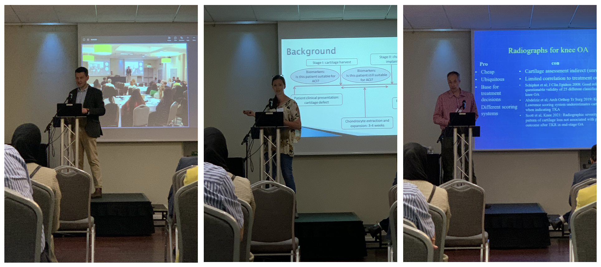
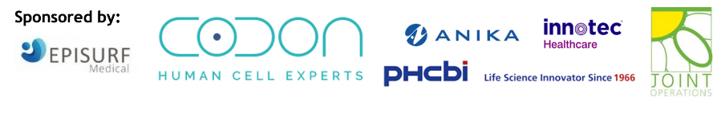
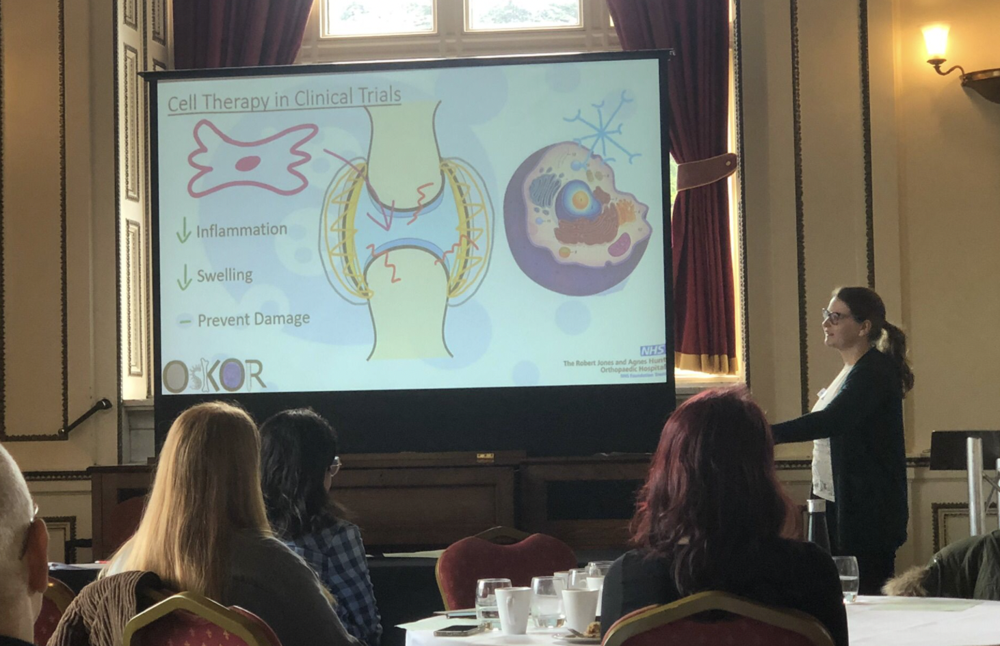

Keele courses and conferences

Keele courses and conferences
Tissue Microenvironment and Disease Workshop 2023 20-21-Apr-2023
Bioreactor Course, Keele University 21-Mar-2023 - 24 -Mar-2023
PGR Symposium 2024
The PGR Symposium 2024 was held in Keele campus on the 17th and the 18th of June 2024.
On the 17th of June,Dr Jade Perry gave an excellent career talk title 10 years in 15 minutes, where she explained her journey through research to the audiance, giving tips and advices to current and future PhD students attending the symposium.
Two final years PhD students Anaïs Makos and Tian Lan gave a 15 minute talk summarizing their thesis and highlighting their findings:
- Anaïs Makos: Potential biomarkers predicting response to TNF-blockers in Psoriatic Arthritis
- Tian Lan: Cell therapy for repair of cartilage defects in the ankle - A PhD summary
On the 18th of June, Larissa Rix participated to the 3-minute thesis and gave us a summary of her PhD project.
Abi Jones, Henry Barrett, Hollie Wilkinson, Ton Link and Yumna Ladha displayed their academic posters to share their work with all PhD students and supervisors attending the symposium.
PGR Symposium 2023
The PGR Symposium 2023 was help on the 14th of March 2023.
Anaïs Makos and Rebecca Davies shared their projects with the audience with a 10 minute presentation followed by interesting questions and discussion on their work.
- Anaïs Makos: PARIS study: Psoriatic Arthritis – Resistance to TNF Inhibitor Study
- Rebecca Davies: Combining cell donors to increase extracellular vesicle yields to meet the demand of treatment for inflammatory arthritis
Jessica Fisher-Stokes, Larissa Rix and Tian Lan displayed their academic posters; and Henry Barrett and Hollie Wilkinson displayed their engagement posters.
Tissue Microenvironment and Disease Workshop 2023 20-21-Apr-2023
Several members of the group attened a fantastic 2-day workshop at Keele Hall, with some excellent speakers on topics including: Imaging the diseased microenvironment; Data based approaches to microenvironmental analysis; Biological methods in the tumour microenvironment. Our team did brilliantly with Dr Helen McCarthy and Ms Hollie Wilkinson winning poster and oral prizes!
Bioreactor Course, Keele University 21-Mar-2023 - 24-Mar-2023
Drs Charlotte Hulme and Karina Wright organised the 2023 Bioreactors and Growth Environments Workshop. The workshop welcomed over 70 delegates, from the UK, Europe and further afield. Speakers included experts from academia and industry, providing an overview of the basic principles of bioreactor design through to their clinical applications. We had some excellent student engagement in the ‘Design a Bioreactor Challenge’, with the winning group working together to develop a novel bioreactor for assessing tissue engineered tendons.
Cartilage Symposium 2022

On the 7th and 8th of June 2022 the 12th Oswestry/Keele Cartilage Symposium was held at Keele Hall, organised by Dr Helen McCarthy, Dr Karina Wright, Prof Martyn Snow, Prof Sally Roberts, and Mr Paul Jermin.
The international symposium gathered surgeons and scientists from the UK, Ireland, Germany, Switzerland, and USA to talk about the latest research and clinical updates in terms of treatments, biomarkers next generation biological repair and rehabilitation.
During these two days, speakers focus on “Influencing factors in cartilage repair outcomes”, “Current trends in cartilage repair”, “Next generation biological repair”, “Pain in Osteoarthritis”, and “Biomarkers for monitoring knee diseases and treatments”

Abstracts:
Dr Jan Herman Kuiper – ACTIVE, a multicentre RCT of ACI versus other surgical interventions for cartilage defects: five-year results”
Mr Paul Jermin – Autologous blood products with or without platelets
Dr Karina Wright – Proteomic characterization of response to ACI
Dr Bernhard Tins – Imaging as a biomarker
An early career session was also organised to allow PhD student and post-docs to introduce their projects to experts in the field.

Abstracts:
Rebecca Davies – Umbilical cord mesenchymal stromal cell derived extracellular vesicles match, and perhaps surpass, their parental cell’s ability to treat inflammatory arthritis
Tian Lan – Characterisation of mesenchymal stromal cells isolated from autologous bone marrow aspirate concentrates used clinically in the treatment of cartilage defects in the ankle
Anaïs Makos – Predicting patients’ response to TNF inhibitors using potential blood biomarkers in Psoriatic Arthritis
Congratulations to Dr Mahid Ahmed (Newcastle) who won the early career presentation award with “A bioprinted high-throughput human 3D osteochondral model for osteoarthritis research”

Thank you to all the presenters for being with us and for sharing their hard work to the assembly and thank you to the organisers who did an amazing job hosting the event and providing an opportunity for us to discuss our data with international experts from around the world.

PGR Symposium 2022
On the 29th of April was held the Faculty of Medicine and Health Sciences 2022 PGR Symposium at Keele University. PhD students from faculty of Medicine and Health Sciences gathered to share their project in the form of 3 minutes presentation (3-minute thesis), 10 minutes presentation and poster presentation.
Three PhD students from our department participated to this symposium:
Rebecca Davis: “The therapeutic effect of umbilical cord mesenchymal stromal cell extracellular vesicles in inflammatory arthritis”
Anaïs makos: “Immune cell profile in patient with Psoriatic Arthritis”
Tian Lan: “Characterisation of mesenchymal stromal cells isolated from autologous bone marrow aspirate concentrates used clinically in the treatment of cartilage defects in the ankle”
The oral presentation runner up prize went to Rebecca Davis for her presentation of extracellular vesicles (EV) “The therapeutic effect of umbilical cord mesenchymal stromal cell extracellular vesicles in inflammatory arthritis”.
